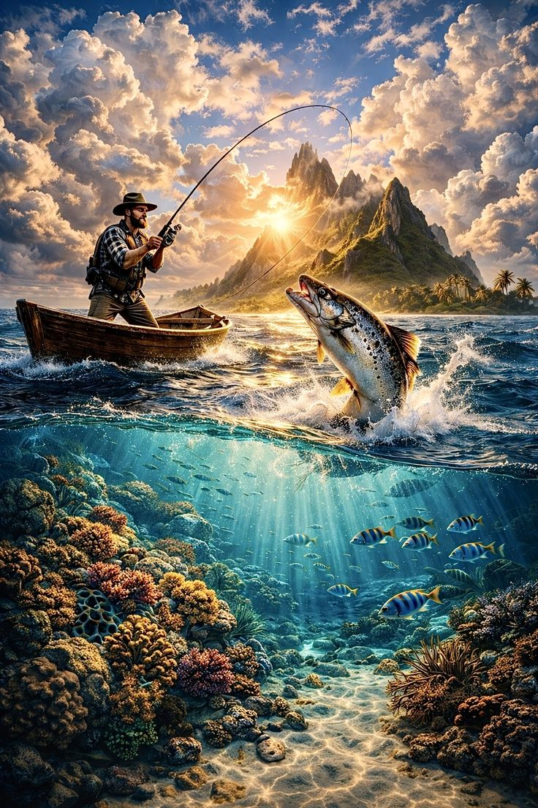

Your Partner in
Smart Fish Farming
Constantnople delivers durable HDPE fish cage systems paired with IoT monitoring technology — helping fish farmers across Kenya and Africa increase yields, reduce losses, and farm sustainably for long-term food security.

Data Collection Layer
Sensors installed within cages collect real-time data and stream it continuously to our central monitoring platform.
- pH Levels
- Water Temperature
- Turbidity
- Dissolved Oxygen (in progress)
- Continuous data transmission to the central system
- Real-time water quality monitoring & alerts
AI & Analytics Platform
Our data platform turns sensor readings into actionable insights that help farmers make smarter, faster decisions every day.
IoT Sensor Processing
Collects and processes real-time data streamed from sensors deployed within fish cages every 25–30 minutes.
Predictive Insights
Generates predictions on fish health, water quality trends, and early risk of disease or oxygen deficiency.
Decision Support
Provides actionable recommendations and clear guidance to help farmers respond to changing conditions in real time.
Frequent Data Reads
Data captured every 25–30 minutes and securely stored on a virtual server — giving investors and farmers confidence in continuity.
Historical Data Access
Full data history with date filtering to identify patterns, review past events, and benchmark performance over time.
Smart Threshold Alerts
Automated alerts sent the moment water quality thresholds are crossed — giving farmers the response time they need.
Why This Matters
Fish farmers across Kenya and Africa face real, costly challenges every day.
Our solution was built specifically to solve them.
High Fish Mortality
Poor cage conditions and unmanaged water quality lead to avoidable and costly stock losses.
Rapidly Degrading Cages
Wooden structures rot, pollute water, and require constant expensive repairs every season.
No Water Quality Visibility
Disease outbreaks and oxygen crashes go undetected until the damage is already done.
Limited Tech Access
Modern aquaculture tools remain out of reach for most small-scale farmers across the region.
Higher Fish Survival
Better cage design and improved water circulation keep fish healthy throughout the season.
Improved Productivity
Durable HDPE cages and monitoring tools drive increased, reliable yields season after season.
Reduced Losses
Less time and money spent on cage repairs and emergency stock replacement each year.
Protected Ecosystems
Contributes to food security, farmer livelihoods, and long-term environmental sustainability.
How We Transform Fish Farming
Three pillars that work together to improve every aspect of your aquaculture operation.
Durable HDPE Cages
Built to resist sunlight degradation, corrosion, and harsh aquatic conditions — outlasting traditional wooden cages with far lower maintenance costs.
IoT Water Monitoring
Real-time tracking of water quality and fish health conditions, giving farmers the insights they need to act before problems arise.
Reduced Operational Losses
Farmers spend less time repairing cages and more time growing fish — our systems help lower mortality rates and protect farm investments.
How We Help Farmers
Our approach is practical and problem-driven — built around the real challenges farmers face every day.